22 września 2015, w ligowym meczu Bayernu Monachium z Wolfsburgiem, zakończonym wynikiem 5:1, Polak wszedł na boisko na początku drugiej połowy (z powodu lekkiego urazu opuścił poprzedni mecz ligowy z SV Darmstadt 98) i w ciągu zaledwie dziewięciu minut strzelił pięć bramek (w 51., 52., 55., 57. i 60. minucie meczu). Pobił przy tym szereg rekordów, które zostały następnie zapisane w księdze rekordów Guinnessa. Był to najszybszy hat-trick oraz najszybciej strzelone cztery i pięć bramek (łącznie 539 sekund) w historii Bundesligi. Lewandowski został pierwszym piłkarzem, który osiągnął taką liczbę goli, rozpoczynając mecz na ławce rezerwowych. Jego pięć bramek to także najszybciej zdobyte trafienia w historii czterech najmocniejszych lig Europy: niemieckiej, włoskiej, hiszpańskiej i angielskiej. Ponadto ostatni z pięciu – strzelony efektownymi nożycami – został uznany golem sezonu 2015/2016 w Bundeslidze. Cztery dni później, w meczu z 1. FSV Mainz 05, zdobył swojego 100. gola w Bundeslidze, stając się 50. zawodnikiem w historii (a piątym zagranicznym), który strzelił 100 bramek w najwyższej klasie rozgrywkowej w Niemczech.29 września 2015, w meczu drugiej kolejki fazy grupowej Ligi Mistrzów pomiędzy Bayernem Monachium a Dinamem Zagrzeb (5:0), polski napastnik zdobył hat-tricka, stając się najskuteczniejszym Polakiem w historii europejskich pucharów. Pobił tym samym dotychczasowy rekord Włodzimierza Lubańskiego (31 trafień). 11 stycznia 2016 zajął czwarte miejsce w plebiscycie Złotej Piłki FIFA, zdobywając 4,17% głosów. Przed nim uplasowali się jedynie Lionel Messi, Cristiano Ronaldo i Neymar. 16 marca 2016, podczas rewanżowego meczu 1/8 finału Ligi Mistrzów z Juventusem (wygranego 4:2 po dogrywce), Lewandowski rozegrał swoje 48. spotkanie w Lidze Mistrzów. Dzięki temu ustanowił nowy rekord występów polskiego zawodnika w tym turnieju, wyprzedzając Jerzego Dudka, który zagrał w nim 47 razy. Został także najskuteczniejszym polskim zawodnikiem w historii rozgrywek. W ówczesnej edycji dotarł z Bayernem do półfinału, gdzie niemiecki klub przegrał w dwumeczu z Atlético Madryt. Lewandowski strzelił w tamtej edycji Ligi Mistrzów dziewięć goli, zajmując drugie miejsce w klasyfikacji strzelców (lepszy był jedynie Cristiano Ronaldo, który zdobył 16 bramek). 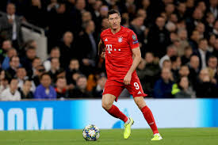 W sezonie 2015/2016 obronił z Bayernem mistrzostwo Niemiec – był to historyczny dla klubu, zdobyty czwarty raz z rzędu (i 26. ogółem) tytuł mistrzowski. Sam napastnik, z dorobkiem 30 goli, po raz drugi w swojej karierze został królem strzelców Bundesligi – osiągnął taki wynik bramkowy jako pierwszy zawodnik od czasów Dietera Müllera z 1. FC Köln, który w kampanii 1976/1977 sięgał po koronę króla strzelców z 34 trafieniami na koncie. Polak został również pierwszym zagranicznym piłkarzem w historii, który strzelił 30 bramek w jednym sezonie najwyższej klasy rozgrywkowej w Niemczech. 21 maja 2016 po raz drugi w karierze zdobył Puchar Niemiec. Jego zespół pokonał w finale na Stadionie Olimpijskim w Berlinie Borussię Dortmund po rzutach karnych (0:0, k. 4:3), zaś sam „Lewy” skutecznie wykorzystał jedną z „jedenastek”. Wspomniany finał był 100. meczem Lewandowskiego w Bayernie, biorąc pod uwagę wszystkie rozgrywki. Polak stał się także piątym zawodnikiem w historii, który sięgał po to trofeum z dwoma różnymi klubami. W 51 meczach Bayernu w ówczesnym sezonie Lewandowski strzelił 42 bramki – 30 w Bundeslidze, dziewięć w Lidze Mistrzów i trzy w Pucharze Niemiec. Wraz z Thomasem Müllerem stworzyli wówczas jeden z najskuteczniejszych duetów napastników w historii Bundesligi, zdobywając łącznie 74 gole. 30 maja 2016 Polak znalazł się w drużynie sezonu Ligi Mistrzów. 21 lipca magazyn „Kicker” okrzyknął go najlepszym napastnikiem Bundesligi w sezonie 2015/2016, prezentującym „klasę światową”.
14 sierpnia 2016 Lewandowski zdobył drugi w swojej karierze, a pierwszy w barwach Bayernu Superpuchar Niemiec, po pokonaniu Borussii Dortmund 2:0. Dla „Lewego” było to szóste starcie o wspomniane trofeum. Oprócz niego dokonało tego tylko dwóch zawodników – jego klubowi koledzy: Philipp Lahm i Thomas Müller. Pierwsze trafienia w nowym sezonie polski napastnik zanotował 19 sierpnia 2016, zdobywając hat-tricka w wygranym 5:0 meczu I rundy Pucharu Niemiec przeciwko FC Carl Zeiss Jena. 26 sierpnia 2016 ponownie wpisał się na listę strzelców trzykrotnie, tym razem w pierwszej kolejce Bundesligi z Werderem Brema (6:0), stając się drugim po Gerdzie Müllerze piłkarzem Bayernu, który strzelił hat-tricka w pierwszej serii spotkań. 1 października 2016 rozegrał swój 200. mecz w Bundeslidze (1:1 z 1. FC Köln). Został tym samym dziewiątym polskim zawodnikiem, który osiągnął taką liczbę występów w najwyższej klasie rozgrywkowej w Niemczech. 2 grudnia 2016, w 90. minucie ligowego meczu z 1. FSV Mainz 05, zdobył bramkę bezpośrednio z rzutu wolnego, ustalając wynik na 3:1. Był to pierwszy tego typu gol strzelony przez Lewandowskiego w barwach Bayernu. Swój wyczyn powtórzył cztery dni później, w meczu fazy grupowej Ligi Mistrzów z Atlético Madryt, kiedy to strzałem w okienko bramki strzeżonej przez Jana Oblaka, zapewnił swojej drużynie zwycięstwo 1:0. Po zdobyciu tej bramki, poprzez charakterystyczną cieszynkę przekazał światu wiadomość, że spodziewa się dziecka. 10 grudnia, w spotkaniu z Wolfsburgiem, zdobył swoją 200. ligową bramkę w karierze, natomiast 13 grudnia przedłużył kontrakt z Bayernem – do 30 czerwca 2021 roku. 20 stycznia 2017 strzelił dwie bramki w wygranym 2:1 meczu z SC Freiburg, dzięki czemu z dorobkiem 135 goli awansował na drugie miejsce w klasyfikacji zagranicznych strzelców Bundesligi, wyprzedzając zdobywcę 133 bramek, Giovanego Élbera. 25 lutego 2017 zdobył trzy gole w wygranym 8:0 ligowym spotkaniu z Hamburgerem SV i po raz pierwszy w karierze skompletował dwa hat-tricki w jednym sezonie ligowym. 1 marca 2017, w ćwierćfinale Pucharu Niemiec z FC Schalke 04 (3:0), zdobył dwa gole – drugi był jednocześnie dwusetnym trafieniem Lewandowskiego dla niemieckich klubów. 11 marca, w spotkaniu 24. kolejki Bundesligi przeciwko Eintrachtowi Frankfurt (3:0), również strzelił dwie bramki – tym samym w 136. występie zdobył swojego 100. gola dla Bayernu. 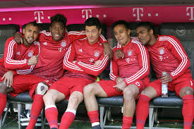 8 kwietnia 2017, w wygranym 4:1 meczu z Borussią Dortmund, znów dwukrotnie wpisał się na listę strzelców, kompletując w ten sposób 26 trafień po 28 kolejkach Bundesligi, jako pierwszy zawodnik od sezonu 1980/1981. 12 kwietnia 2017 z powodu urazu barku nie wystąpił w pierwszym meczu ćwierćfinału Ligi Mistrzów z Realem Madryt, przegranym 1:2. Spotkanie rewanżowe, rozgrywane 18 kwietnia 2017 na Estadio Santiago Bernabéu, rozpoczął już w wyjściowym składzie Bayernu – w 53. minucie otworzył wynik strzałem z rzutu karnego, stając się pierwszym zawodnikiem, który strzelił Realowi Madryt sześć goli na poziomie Ligi Mistrzów. Ostatecznie Bayern przegrał po dogrywce 2:4 i odpadł z rozgrywek, a Robert Lewandowski zakończył tamtą edycję turnieju z dorobkiem 8 goli. W 2020, w wywiadzie dla katalońskiego „Sportu”, polski napastnik ujawnił, że po wspomnianym dwumeczu Cristiano Ronaldo i Sergio Ramos przekonywali go do transferu do Realu Madryt. 13 maja 2017, w wygranym 5:4 meczu 33. kolejki Bundesligi z RB Leipzig, „Lewy” strzelił dwa gole, uzyskując 30 bramek w dwóch kolejnych sezonach Bundesligi – jako drugi po Gerdzie Müllerze zawodnik w historii, a zarazem pierwszy od 43 lat (sezon 1973/1974). Ponadto pierwsze trafienie było 150. golem strzelonym przez Lewandowskiego w jego 226. występie w Bundeslidze. W sezonie 2016/2017 Robert Lewandowski zdobył z Bayernem piąte w swojej karierze mistrzostwo Niemiec (trzecie z rzędu w barwach Bayernu), a sam powtórzył swój ligowy dorobek bramkowy z poprzedniego sezonu, zdobywając 30 goli, co zagwarantowało mu drugie miejsce w klasyfikacji strzelców Bundesligi – za zdobywcą 31 bramek, Pierre-Emerickiem Aubameyangiem. Biorąc pod uwagę wszystkie rozgrywki w tamtym sezonie, Lewandowski w 47 meczach Bayernu strzelił 43 gole. Dzięki temu o jedno trafienie poprawił indywidualny rekord bramek, strzelonych we wszystkich rozgrywkach klubowych w jednym sezonie, ustanowiony rok wcześniej. Z dorobkiem pięciu goli został również królem strzelców ówczesnej edycji Pucharu Niemiec, pomimo że Bayern odpadł z tych rozgrywek na poziomie półfinału – po porażce 2:3 z Borussią Dortmund. Ponadto Robert Lewandowski znalazł się w najlepszych jedenastkach sezonu Bundesligi i Ligi Mistrzów. 5 czerwca 2017 „Lewy” został wybrany najlepszym piłkarzem Bundesligi sezonu 2016/17 przez samych zawodników, a następnie przez magazyn „Kicker”.
5 sierpnia 2017 Polak zdobył z Bayernem Monachium kolejny Superpuchar Niemiec. Jego zespół, w meczu rozgrywanym na Signal Iduna Park w Dortmundzie, pokonał po serii rzutów karnych miejscową Borussię (2:2, k. 5:4). Dla „Lewego” było to trzecie takie trofeum (drugie w barwach Bayernu), natomiast sam mecz siódmym tego typu. Oprócz niego podobnym wyczynem mógł pochwalić się jedynie Thomas Müller. 17 sierpnia 2017 polski napastnik został nominowany do nagrody Piłkarza Roku FIFA. 18 sierpnia strzelił bramkę w wygranym 3:1 ligowym meczu z Bayerem 04 Leverkusen – dzięki odniesionemu wówczas zwycięstwu stał się pierwszym piłkarzem w historii, który wygrał siedem meczów pierwszej kolejki Bundesligi z rzędu. 9 października znalazł się w gronie trzydziestu nominowanych do Złotej Piłki. 14 października 2017, w wygranym 5:0 meczu z SC Freiburgiem, strzelił 160. bramkę w Bundeslidze. 28 października 2017, zdobywając gola w wygranym 2:0 meczu z RB Leipzig, został pierwszym piłkarzem Bayernu od czasów Giovanego Élbera (sezon 2002/2003), który wpisał się na listę strzelców w każdym z pięciu pierwszych domowych spotkań Bundesligi w sezonie. 18 listopada, w meczu z Augsburgiem (3:0), strzelił 163. i 164. bramkę w Bundeslidze, co pozwoliło mu wyprzedzić w klasyfikacji wszech czasów tych rozgrywek niemieckiego napastnika, Karla-Heinza Rummenigge. 22 listopada 2017, w wygranym 2:1 meczu Ligi Mistrzów z RSC Anderlechtem, zdobył 50. bramkę w roku, biorąc pod uwagę rozgrywki klubowe i reprezentację, osiągając taki wynik bramkowy (w jednym roku kalendarzowym) po raz pierwszy w karierze. 4 grudnia 2017 amerykańska telewizja sportowa ESPN uznała go za najlepszego środkowego napastnika na świecie. Dzień później, w meczu z Paris Saint-Germain (3:1), zanotował 50. trafienie w europejskich pucharach (a 43. w rozgrywkach Ligi Mistrzów). 13 grudnia, w spotkaniu przeciwko 1. FC Köln, zdobył 166. gola w Bundeslidze i awansował do dziesiątki najlepszych strzelców w historii rozgrywek. 21 stycznia 2018, w meczu z Werderem Brema (4:2), strzelił 93. i 94. ligową bramkę dla Bayernu, zostając najskuteczniejszym zagranicznym strzelcem w historii tego klubu w ramach Bundesligi. 4 lutego 2018 „Lewy” został wybrany Piłkarzem Roku 2017 w plebiscycie Piłki Nożnej. Sześć dni później, zdobywając bramkę w 22. kolejce Bundesligi w wygranym 2:1 meczu z FC Schalke 04, wyrównał wieloletni rekord Juppa Heynckesa (ówczesnego trenera Bayernu) – niemiecki napastnik w sezonie 1972/1973 strzelał co najmniej jednego gola w każdym z pierwszych jedenastu domowych spotkaniach w Bundeslidze (w barwach Borussii Mönchengladbach). 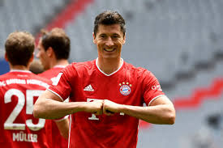 W lutym 2018 światło dzienne ujrzała informacja o zakończeniu współpracy pomiędzy Lewandowskim a jego wieloletnim menedżerem, Cezarym Kucharskim i związaniu się Polaka z izraelskim agentem, Pinhasem „Pinim” Zahavim, mającym swój udział m.in. w transferze Neymara z FC Barcelony do Paris Saint-Germain w 2017. Ruch ten wywołał lawinę spekulacji transferowych odnośnie ewentualnej zmiany barw klubowych przez Lewandowskiego. 20 lutego 2018 dzięki dubletowi uzyskanemu w starciu z Beşiktaşem JK (5:0), z dorobkiem 45 goli awansował do dziesiątki najlepszych strzelców w historii Ligi Mistrzów, wyprzedzając strzelca 44 goli w tych rozgrywkach, Didiera Drogbę. 24 lutego 2018, w zremisowanym 0:0 meczu 24. kolejki Bundesligi z Herthą, Lewandowski rozegrał swój 250. mecz w Bundeslidze. 10 marca 2018 kompletując hat-tricka w meczu z Hamburgerem SV (6:0), zdobył swoją 100. ligową bramkę w barwach Bayernu Monachium. Oprócz niego tej sztuki dokonało tylko pięciu zawodników: Gerd Müller (365 goli), Karl-Heinz Rummenigge (162), Roland Wohlfarth (119), Dieter Hoeneß (102) oraz Thomas Müller (wówczas 102), jednak to Polak uzyskał wspomniany wynik szybciej niż jakikolwiek inny piłkarz, strzelając setnego gola w swoim 120. występie dla Bayernu w Bundeslidze. Z dorobkiem 142 goli został on wówczas najskuteczniejszym zagranicznym piłkarzem w historii tego klubu. Był to również siódmy hat-trick Lewandowskiego w Bundeslidze. Żaden inny zagraniczny zawodnik nie uzyskał takiego dorobku od początku istnienia ligi, czyli od 1963 roku. 31 maca 2018 zdobył trzy gole w meczu z Borussią Dortmund (6:0) i z dorobkiem 177 goli awansował na 8. miejsce w klasyfikacji strzelców wszech czasów Bundesligi, zrównując się z Dieterem Müllerem i Klausem Allofsem. Wspomniany Der Klassiker był już ósmym przypadkiem kiedy Lewandowski strzelił trzy lub więcej bramek w meczu Bundesligi, natomiast aż 47-krotnie trafiał do siatki rywali co najmniej dwa razy w jednym spotkaniu. Gole zdobyte w meczu przeciwko Borussii Dortmund pozwoliły mu również awansować na 5. miejsce w klasyfikacji najlepszych strzelców w historii Bayernu. 21 kwietnia 2018, w ligowym meczu z Hannoverem 96 (3:0), strzelił swoją 106. bramkę dla Bayernu Monachium w Bundeslidze i został najskuteczniejszym obcokrajowcem w barwach pojedynczego klubu w tych rozgrywkach. W sezonie 2017/2018, Lewandowski, wystąpił łącznie w 48 meczach Bayernu strzelając w nich 41 goli i zdobył szóste w swojej karierze, a czwarte z rzędu w barwach Bayernu mistrzostwo Niemiec. Z drużyną dotarł także do finału Pucharu Niemiec, gdzie Bayern pomimo bramki Lewandowskiego, uległ 1:3 Eintrachtowi Frankfurt oraz półfinału Ligi Mistrzów, gdzie lepszy w dwumeczu (3:4) okazał się Real Madryt. Indywidualnie, Polak, z dorobkiem 29 goli po raz trzeci w karierze został królem strzelców Bundesligi, dokonując tego jako pierwszy zagraniczny zawodnik, a także strzelając 6 goli został najskuteczniejszym strzelcem ówczesnej edycji Pucharu Niemiec. Występy w rozgrywkach Ligi Mistrzów zakończył z 5 golami uzyskanymi w 11 występach. 18 maja 2018 znalazł się w najlepszej jedenastce zakończonego sezonu Bundesligi.
Pomimo narastających spekulacji odnośnie do transferu Lewandowskiego, polski napastnik ostatecznie pozostał w Bayernie. Sezon 2018/2019, pod wodzą nowego szkoleniowca, Niko Kovača, Bawarczycy rozpoczęli 12 sierpnia 2018, spotkaniem o Superpuchar Niemiec z Eintrachtem Frankfurt. Robert Lewandowski znalazł się w wyjściowym składzie na to spotkanie i już po 54 minutach gry skompletował hat-tricka, stając się pierwszym zawodnikiem w historii, który zdobył trzy bramki w meczu o Superpuchar Niemiec. Mecz ostatecznie zakończył się zwycięstwem Bayernu (5:0), a Lewandowski mógł cieszyć się ze zdobycia 15. klubowego trofeum w karierze, co pozwoliło mu, stać się najbardziej utytułowanym polskim piłkarzem w historii, obok takich zawodników jak: Hubert Kostka, Erwin Wilczek czy Maciej Żurawski. Polak strzelając wspomniane trzy gole, z łącznym dorobkiem 5 bramek, został najlepszym strzelcem w historii Superpucharu Niemiec, a samo spotkanie było ósmym finałem tego pucharu, w którym zagrał. 18 sierpnia 2018 zapewnił klubowi zwycięstwo w meczu I rundy Pucharu Niemiec z czwartoligowym SV Drochtersen/Assel (1:0), strzelając jedyną bramkę w tamtym spotkaniu. 24 sierpnia 2018 zdobył bramkę z rzutu karnego w wygranym 3:1, meczu 1. kolejki Bundesligi z TSG 1899 Hoffenheim. Wygrana w tym meczu pozwoliła mu stać się pierwszym piłkarzem w historii, który zwyciężył w 8 spotkaniach inaugurujących sezon Bundesligi z rzędu. 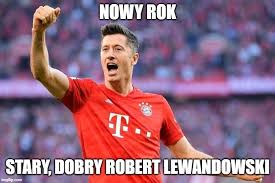 15 września 2018, w wygranym 3:1 meczu 3. kolejki Bundesligi z Bayerem 04 Leverkusen, Lewandowski rozegrał swój 200. mecz w barwach Bayernu Monachium. 19 września 2018, w meczu fazy grupowej Ligi Mistrzów z Benfiką (2:0), zdobył swoją 400. bramkę w profesjonalnej karierze, a także 46. w rozgrywkach Ligi Mistrzów, co pozwoliło mu zrównać się w klasyfikacji wszech czasów tych rozgrywek z Eusébio oraz Filippo Inzaghim. Oprócz niego, jedynymi aktywnymi wówczas zawodnikami, którzy przekroczyli barierę 400. goli w karierze byli: Cristiano Ronaldo (678), Lionel Messi (651), Zlatan Ibrahimović (500), Luis Alberto Suárez (430) oraz David Villa (407). 22 września 2018, skutecznie wykorzystując rzut karny w meczu z FC Schalke 04 (2:0), stał się pierwszym piłkarzem w historii Bundesligi, który zdobywał bramki w sześciu kolejnych meczach przeciwko tej drużynie, a także z łącznym dorobkiem 183 bramek awansował na 6. miejsce w klasyfikacji najlepszych strzelców w historii tej ligi. 7 listopada 2018 w wygranym meczu 4. kolejki fazy grupowej Ligi Mistrzów z AEK Ateny (2:0), Lewandowski rozegrał swój 100. mecz w europejskich pucharach. Polski napastnik zdobywając dwie bramki, awansował na 7. miejsce w tabeli wszech wczasów Ligi Mistrzów, co pozwoliło mu zrównać się z Argentyńczykiem – Alfredo Di Stéfano (49). 2 marca 2019, w wygranym meczu 24. kolejki Bundesligi z Borussią Mönchengladbach (5:1), zdobył dwie bramki czym wyrównał rekord Peruwiańczyka Claudio Pizarro (195 goli) i został najskuteczniejszym obcokrajowcem w historii Bundesligi, a także awansował na 5. miejsce w tabeli wszech czasów Bundesligi. 9 marca, w kolejnym ligowym meczu przeciwko VfL Wolfsburg, zdobył swoją 196. i 197. bramkę w Bundeslidze zostając samodzielnym zagranicznym liderem strzelców tych rozgrywek. 6 kwietnia 2019, w wygranym 5:0 meczu 28. kolejki Bundesligi z Borussią Dortmund, Lewandowski strzelił 2 bramki. Pierwsza z nich była jego 200. bramką w Bundeslidze. Tym samym Lewandowski został pierwszym obcokrajowcem w historii Bundesligi, który strzelił w niej 200 goli. W zakończonym sezonie 2018/2019, Lewandowski wystąpił łącznie w 47 meczach Bayernu strzelając w nich 40 goli i zdobył siódme w swojej karierze, a piąte z rzędu w barwach Bayernu mistrzostwo Niemiec. Z drużyną także zdobył Puchar Niemiec, trzeci w swojej karierze, a także drugi w barwach Bayernu. Indywidualnie sięgnął po raz czwarty po koronę króla strzelców Bundesligi strzelając 22 bramki w sezonie, a także czwartą koronę króla strzelców Pucharu Niemiec, strzelając łącznie 7 goli w tych rozgrywkach. W rozgrywkach Ligi Mistrzów zdobył 8 goli w 8 spotkaniach, ustępując jedynie Leo Messiemu (12 goli) i dotarł z drużyną do 1/8 finału rozgrywek, gdzie Bayern odpadł w dwumeczu (1:3) z Liverpoolem.
2019/2020 Sezon 2019/2020, Lewandowski z Bayernem rozpoczął 3 sierpnia 2019, spotkaniem o Superpuchar Niemiec z Borussią Dortmund. Mecz zakończył się zwycięstwem Borussii (2:0). Dla drużyny BVB był to pierwszy od 2014 zdobyty tytuł. 16 sierpnia 2019 zdobył dwie bramki zapewniając drużynie remis w meczu 1. kolejki Bundesligi z Herhą BSC (2:2). 29 sierpnia 2019 przedłużył umowę z Bayernem Monachium do 30 czerwca 2023. Po podpisaniu kontaktu powiedział: Bayern stał się dla mnie jak dom. Moja rodzina świetnie czuje się w Monachium. Jestem przekonany, że w najbliższych dniach osiągniemy tutaj naprawdę dużo. To jeden z trzech największych klubów na świecie i jestem dumny z możliwości bronienia jego barw. Mamy znakomity zespół. 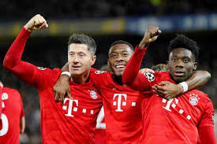 18 września 2019, w wygranym meczu I kolejki fazy grupowej Ligi Mistrzów z Crveną zvezdą Belgrad (3:0), Lewandowski zdobył swoją 200. bramkę w barwach Bayernu Monachium. Oprócz niego tę barierę przekroczyło tylko dwóch zawodników: Gerd Müller (508) oraz Karl-Heinz Rummenigge (217). 28 września 2019, w wygranym meczu 6. kolejki Bundesligi z SC Paderborn (3:2), Lewandowski zdobywając bramkę, został pierwszym zawodnikiem w historii Bundesligi, który w pierwszych sześciu kolejkach strzelił 10 goli. Polak został też pierwszym zawodnikiem w historii Bayernu Monachium, który strzelał gole w każdym z sześciu pierwszych spotkań sezonu Bundesligi. 1 października 2019, w wygranym meczu II kolejki fazy grupowej Ligi Mistrzów z Tottenhamem Hotspur (7:2), Lewandowski zdobywając dwie bramki, zrównał się z Holendrem Ruudem van Nistelrooy’em w klasyfikacji strzeleckiej Ligi Mistrzów, awansując na 5. miejsce z 56 golami w tych rozgrywkach. 5 października 2019, w przegranym meczu 7. kolejki Bundesligi z TSG 1899 Hoffenheim (1:2), Lewandowski zdobył swoją 213. bramkę w Bundeslidze, dzięki czemu awansował na 4. miejsce w klasyfikacji strzelców wszech czasów Bundesligi, zrównując się z Niemcem Manfredem Burgsmüllerem. 19 października 2019, w meczu 8. kolejki Bundesligi z FC Augsburg (2:2), Polak zdobywając swoją 214. bramkę w Bundeslidze pozostał samodzielnie na 4. miejscu w klasyfikacji strzelców wszech czasów Bundesligi, a także wyrównał dwa rekordy – zrównał się z Niemcem Carstenem Janckerem (który jako jedyny piłkarz w historii Bayernu Monachium zdobył przynajmniej jedną bramkę w 11 meczach z rzędu), oraz wyrównał rekord Gabończyka Pierre-Emericka Aubameyanga, który w sezonie 2014/2015 strzelał gole w każdej z pierwszych ośmiu pierwszych kolejek Bundesligi. 9 listopada 2019, w wygranym meczu 11. kolejki Bundesligi z Borussią Dortmund (4:0), Lewandowski zdobywając dwie bramki pobił 50-letni rekord Gerda Müllera, który w sezonie 1968/1969 jako pierwszy zawodnik w historii zdobywał bramki w pierwszych 11. kolejkach Bundesligi (15 goli w 11 meczach). Lewandowski na tym etapie rozgrywek zdobył 16 goli w 11 meczach. 26 listopada 2019, w wygranym meczu V kolejki fazy grupowej Ligi Mistrzów z Crveną zvezdą (6:0), Lewandowski zdobył 4 bramki i awansował na 5. miejsce w klasyfikacji strzelców wszech czasów Ligi Mistrzów. Były to również najszybszej strzelone cztery bramki historii rozgrywek – Lewandowskiemu zajęło to 14 minut i 31 sekund (53', 60' 64', 68'). Polak, z dorobkiem 45 goli został wówczas najskuteczniejszym zawodnikiem Bayernu Monachium w Lidze Mistrzów, a także stał się drugim piłkarzem w historii tych rozgrywek, który zdobył dwukrotnie cztery gole w jednym spotkaniu. 2 grudnia 2019, Lewandowski z 44 punktami zajął 8. miejsce w plebiscycie Złotej Piłki, którą jako pierwszy zawodnik w historii po raz szósty w karierze zdobył Lionel Messi. Podczas uroczystej gali plebiscytu, odbywającej się w paryskim teatrze Châtelet, Polak zasiadł w pierwszym rzędzie obok Lionela Messiego oraz Virgila van Dijka i wręczył Alissonowi Beckerowi trofeum Lwa Jaszyna, nagrodę dla najlepszego bramkarza 2019 roku. 14 grudnia 2019, w wygranym meczu 15. kolejki Bundesligi z Werderem Brema (6:1), Lewandowski zdobywając dwie bramki, zrównał się z Juppem Heynckesem na 3. miejscu w klasyfikacji strzelców wszech czasów Bundesligi z 220 golami. 25 stycznia 2020, w wygranym meczu 19. kolejki Bundesligi z FC Schalke 04 (5:0), Lewandowski zdobywając bramkę został pierwszym zawodnikiem w historii Bundesligi, który strzelał gole w dziewięciu meczach z rzędu przeciwko FC Schalke 04, a także wyrównał 50-letni rekord Bundesligi, zostając drugim zawodnikiem w historii tych rozgrywek po Klausie Fischerze, który w latach 1969–1974 strzelał gole w dziewięciu meczach z rzędu jednemu klubowi: z VfB Stuttgart. 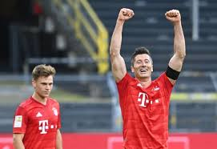 25 lutego 2020 Lewandowski zdobył bramkę oraz zaliczył dwie asysty, w rozgrywanym na Stamford Bridge, wygranym meczu 1/8 finału Ligi Mistrzów z Chelsea (3:0). W tym samym spotkaniu, doznał także kontuzji kolana, która wyłączyła go z gry na miesiąc. Finalnie do gry powrócił po przerwie spowodowanej pandemią koronawirusa, 17 maja 2020 w meczu 26. kolejki Bundesligi przeciwko Unionowi Berlin. Rozegrał w tym meczu 90 minut i zdobył bramkę z rzutu karnego. W następnej kolejce Lewandowski zdobył bramkę w meczu z Eintrachtem Frankfurt, przyczyniając się do wygranej Bayernu 5:2. 30 maja 2020 strzelił dwie bramki w meczu z Fortuną Düsseldorf. 6 czerwca 2020 w ligowym meczu z Bayerem Leverkusen uzyskał kolejne trafienie, zdobywając swoją 30. bramkę w sezonie, jako pierwszy piłkarz spośród pięciu najlepszych europejskich lig. 16 czerwca 2020 zdobył zwycięską bramkę w meczu z Werderem Brema (1:0), co pozwoliło Bayernowi na zapewnienie sobie tytułu mistrzowskiego na dwie kolejki przed końcem rozgrywek. Był to 30. tytuł mistrzowski Bayernu, a 8. w karierze i 6. z rzędu Lewandowskiego. 20 czerwca 2020 w meczu z SC Freiburg zdobył swoje 32. i 33. trafienie w sezonie. Polak pobił tym samym rekord należący do Pierre Emericka-Aubameyanga i został najlepszym obcokrajowcem pod względem liczby zdobytych bramek w jednym sezonie Bundesligi. 27 czerwca 2020 zdobył bramkę z wygranym 4:0 meczu z VfL Wolfsburg i notując 34 trafienia, oficjalnie, po raz piąty w karierze zdobył tytuł króla strzelców Bundesligi. Klubowe rozgrywki ligowe zakończył również jako lider klasyfikacji Europejskiego Złotego Buta. 4 lipca 2020 zdobywając dwie bramki w meczu finałowym przeciwko Eintrachtowi Frankfurt (4:2), zdobył z Bayernem Puchar Niemiec. Był to jego czwarty triumf w tych rozgrywkach w karierze, a trzeci w barwach Bayernu Monachium. Z dorobkiem sześciu goli jako pierwszy zawodnik w historii, po raz piąty w karierze został królem strzelców Pucharu Niemiec. 8 sierpnia 2020 powrócił z Bayernem do rozgrywek Ligi Mistrzów UEFA. W 10 minucie rewanżowego spotkania 1/8 finału z Chelsea został sfaulowany w polu karnym przez bramkarza gości, Wilfredo Caballero, a następnie skutecznie wykorzystał rzut karny. W 83 minucie zdobył swoją drugą bramkę, główką ustalając wynik spotkania na 4:1. Poza tym zanotował także asysty przy bramkach Ivana Perisicia (na 2:0) oraz Corentina Tolisso (na 3:1) i został wybrany zawodnikiem meczu. Druga bramka Polaka w tym spotkaniu była jego 66. w historii rozgrywek, co pozwoliło mu wyprzedzić Karima Benzemę i awansować na 4. miejsce w klasyfikacji strzelców wszech czasów Ligi Mistrzów. W dwumeczu Bayern pokonał Chelsea 7:1 a Lewandowski miał udział we wszystkich zdobytych przez jego drużynę bramkach. Decyzją UEFA od ćwierćfinału drużyny rozegrały po jednym meczu a wszystkie spotkania odbyły się w Lizbonie. W ćwierćfinale Bayern mierzył się z Barceloną. Mecz z uwagi na historię pojedynków i klasę sportową drużyn, media określiły hitem tej fazy rozgrywek. W spotkaniu rozgrywanym na Estádio da Luz Robert Lewandowski zdobył bramkę i zanotował asystę przy otwierającym wynik meczu, golu Thomasa Mullera, w 4 minucie spotkania, które zakończyło się zwycięstwem Bayernu 8:2. Był to pierwszy przypadek od 1949 roku kiedy Barcelona straciła siedem bramek w oficjalnym meczu, a Bayern Monachium stał się pierwszą drużyną w historii, która zdobyła osiem bramek w jednym meczu ćwierćfinału Ligi Mistrzów. Rywalem Bayernu w półfinale okazał się francuski Olympique Lyon. Media w Polsce zapowiadały mecz jako pojedynek dwóch byłych gwiazd Ekstraklasy, Lewandowskiego i Marcelo, byłego defensora Wisły Kraków. W meczu półfinałowym z Lyonem, rozegranym 19 sierpnia 2020, Lewandowski zdobył bramkę oraz asystował przy golu Serga Gnabry’ego i ostatecznie po zwycięstwie 3:0 po raz drugi w karierze awansował do finału Ligi Mistrzów. W finale, rozegranym 23 sierpnia 2020 na Estádio da Luz, przeciwnikiem Bayernu był zespół Paris Saint-Germain. Spotkanie zakończyło się zwycięstwem Bayernu Monachium 1:0 po bramce Kingsleya Comana. Robert Lewandowski jako jeden z liderów drużyny rozegrał całe spotkanie mając szanse na zdobycie gola i po raz pierwszy w karierze, jako piąty Polak w historii (po Zbigniewie Bońku, Józefie Młynarczyku, Jerzym Dudku i Tomaszu Kuszczaku) zdobył puchar Ligi Mistrzów UEFA. 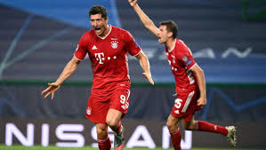 Lewandowski w zwycięskim dla swojej drużyny sezonie zdobywał w bramki w 9 z 10 rozegranych spotkań i z dorobkiem 15 goli pierwszy raz w karierze został królem strzelców Ligi Mistrzów. Zwycięstwo w rozgrywkach Lewandowski zadedykował swojej rodzinie – żonie, córkom oraz nieżyjącemu ojcu. W pomeczowym wywiadzie powiedział: Ciężko pracowaliśmy na ten sukces i w końcu udało się wygrać. Triumfowaliśmy we wszystkich meczach w Lidze Mistrzów i jesteśmy bardzo dumni z tego co osiągnęliśmy i jak graliśmy. Wygrana w Lidze Mistrzów to spełnienie moich marzeń. Ciężko pracowałem na ten sukces i wygrana w najważniejszym turnieju klubowym jest czymś niesamowitym. Po końcowym gwizdku było ogromne wzruszenie i poleciały łzy. Ten puchar dedykuję mojej rodzinie - żonie, dzieciom i na pewno mojemu zmarłemu tacie, który patrzył na mnie z góry i wierzył. Zawsze wierzyłem w to, że osiągnę ten sukces i nigdy się nie poddam. Chciałem podziękować wszystkim, którzy mi kibicują i wierzyli, że mi się uda. Dzięki ich wsparciu było łatwiej. Całe życie, przez wszystkie sezony grałem dla kibiców i staram się dawać im radość przez strzelanie goli, wygrywanie. Polak może osiągać sukcesy na arenie międzynarodowej i być docenianym, to jest coś, co mnie napędza, że piłkarz z Polki może być na świeczniku. To spełnienie marzenia, na które ciężko pracowałem wiele lat. To najwyższe trofeum w klubowej piłce, jakie może być. Sukcesy też nakręcają, da mi to kopniaka, żeby dalej pracować ciężko. To nie koniec, jeszcze wiele lat grania. Cenimy sobie to, co udało nam się zdobyć. To przejdzie do historii na zawsze. Rozgrywki klubowe zakończył z dorobkiem 55 goli i 10 asyst uzyskanych w 47 występach, zdobywając mistrzostwo Niemiec, Puchar Niemiec, wygrywając rozgrywki Ligi Mistrzów UEFA, a także zostając królem strzelców wszystkich rozgrywek w jakich występował. Po zakończeniu sezonu został wybrany najlepszym piłkarzem Bundesligi oraz jako szósty obcokrajowiec w historii, piłkarzem roku w Niemczech.
Lewandowski nowy sezon rozpoczął od wygranego meczu 1. kolejki Bundesligi z FC Schalke 04 (8:0). Polak w 31' minucie spotkania wykorzystał rzut karny podyktowany po faulu na nim, a także zaliczył dwie asysty, w tym jedną po dośrodkowaniu raboną. Dzięki zdobytej bramce stał się pierwszym zawodnikiem w historii Bundesligi, który zdobywał bramki przeciwko FC Schalke 04 w 10 meczach z rzędu. 24 września 2020, pokonując drużynę Sevilli, zdobył z klubem Superpuchar Europy UEFA. Mecz pomiędzy triumfatorami Ligi Mistrzów UEFA i Ligi Europy UEFA został rozegrany na stadionie Puskás Aréna w Budapeszcie i zakończył się zwycięstwem Bayernu 2:1 po dogrywce. Robert Lewandowski rozegrał całe spotkanie oraz zanotował asystę przy bramce Leona Goretzki na 1:1 w 34' minucie. 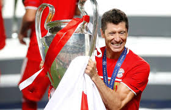 30 września 2020 zanotował dwie asysty przy golach Corentina Tolisso oraz Joshuy Kimmicha i pokonując 3:2 zespół Borussii Dortmund, zdobył z Bayernem szósty w karierze Superpuchar Niemiec. 23 września 2020 ogłoszono nominację Lewandowskiego do przyznawanej przez europejską unię piłkarską, nagrody dla najlepszego piłkarza w Europie. W finałowej trójce corocznego plebiscytu znalazł się wraz z Manuelem Neuerem oraz Kevinem De Bruyne. 1 października 2020 podczas ceremonii losowania grup Ligi Mistrzów w Nyonie, Robert Lewandowski został wybrany najlepszym napastnikiem minionego sezonu oraz jako pierwszy Polak w historii otrzymał nagrodę Piłkarza Roku UEFA, przyznawaną dla najlepszego piłkarza występującego w europejskim klubie. W głosowaniu wzięło udział 80 trenerów europejskich klubów piłkarskich, a także 55 dziennikarzy. Robert Lewandowski zwyciężył w plebiscycie, zdobywając 477 punktów, z przewagą 387 nad drugim w klasyfikacji De Bruyne. Po otrzymaniu nagrody powiedział: To niesamowite uczucie. Ciężko na to pracowałem. Dziękuję wszystkim zawodnikom Bayernu, a także całemu sztabowi szkoleniowemu. Dziękuję też rodzinie, która mnie mocno wspierała. Jako dziecko marzyłem o grze na największych stadionach. Teraz to się spełnia. Czuję się zaszczycony. 4 października zdobył wszystkie cztery bramki dla Bayernu w wygranym 4:3 ligowym meczu z Herhą BSC. Pierwsza bramka Polaka w tym spotkaniu, była jego setną strzeloną na stadionie Bayernu – Allianz Arenie, natomiast druga, 500. trafieniem w jego seniorskiej karierze. Był to drugi przypadek kiedy to Lewandowski strzelił co najmniej 4 bramki w jednym meczu Bundesligi. 17 października zdobył dwie bramki i zanotował asystę w meczu z Arminią Bielefed, trafiając tym samym przeciwko ostatniej drużynie spośród występujących w Bundeslidze w sezonie 2020/2021, której bramkarza dotychczas nie miał okazji pokonać. 24 października trafił trzykrotnie w spotkaniu z Eintrachtem Frankfurt i stał się pierwszym piłkarzem w historii Bundesligi, który uzyskał 10 trafień w pierwszych pięciu kolejkach. 3 listopada w meczu fazy grupowej z Red Bull Salzburg zdobył dwie pierwsze bramki w nowym sezonie Ligi Mistrzów. 7 listopada zdobył bramkę oraz zaliczył asystę w ligowym meczu z Borussią Dortmund. Mecz był jego 300. oficjalnym spotkaniem w barwach Bayernu Monachium, dla którego zdobył w tym czasie 259 goli. 10 listopada 2020 został wybrany najlepszym piłkarzem świata w plebiscycie Goal 50, organizowanym przez międzynarodowy portal informacyjny o piłce nożnej i największą na świecie publikację piłkarską online. 14 grudnia włoski dziennik „Tuttosport” uhonorował go nagrodą Golden Player Award. Lewandowski został pierwszym zawodnikiem wyróżnionym tą nagrodą. 16 grudnia w wygranym 2:1 meczu z VfL Wolfsburg zdobył swoją 250. i 251. bramkę w Bundeslidze, stając się trzecim w historii, po Gerdzie Müllerze (365 goli) i Klausie Fischerze (268 goli), zawodnikiem, który tego dokonał. 11 listopada 2020 Lewandowski został nominowany do nagrody dla najlepszego piłkarza na świecie, przyznawanej corocznie przez międzynarodową federację piłkarską FIFA. Osiągnięcia drużynowe i indywidualne stawiały go w roli faworyta do zwycięstwa. 17 grudnia 2020 podczas gali plebiscytu, Robert Lewandowski jako pierwszy Polak w historii otrzymał nagrodę Piłkarza Roku FIFA. Na kolejnym miejscach uplasowali się Cristiano Ronaldo oraz Lionel Messi. Robert Lewandowski wygrał plebiscyt uzyskując w nim maksymalną liczbę 52 punktów, na które składały się głosy selekcjonerów reprezentacji narodowych, kapitanów tych drużyn, a także przedstawicieli światowych mediów. W głosowaniu trenerów, polski piłkarz otrzymał 554 punkty, ponad dwuipółkrotnie więcej niż drugi Leo Messi (196), natomiast w wyborach kapitanów reprezentacji, 631 punktów, ponad dwa razy więcej niż Cristiano Ronaldo (259). W głosowaniu przedstawicieli mediów, Polak uzyskał 807 na 945 możliwych punktów. Mimo wirtualnej formy gali wręczenia nagród, Robert Lewandowski otrzymał trofeum osobiście z rąk prezydenta FIFA, Gianniego Infantino, który specjalnie w tym celu przyleciał do Monachium. Po ceremonii piłkarz wziął udział w konferencji prasowej, podczas której poza podziękowaniami docenił klasę sportową swoich rywali, Messiego i Ronaldo, którzy także oddali na niego swoje głosy. Jestem dumny. To wielkie osiągnięcie i dla mnie i dla mojej drużyny. Zarówno dla Bayernu, jak i reprezentacji Polski. To był bardzo trudny rok dla wszystkich. Najlepszym momentem dla mnie było zwycięstwo w finale Ligi Mistrzów z Paris-Saint Germain. To był szczególny wieczór. Muszę im powiedzieć „dziękuję”, bo ta nagroda należy też do nich: trenerów, sztabu szkoleniowego w Bayernie i drużyny narodowej. Cieszę się, że mogłem tu dotrzeć po wielu latach ciężkiej pracy. To był rewelacyjny rok. Zawsze ciężko jest utrzymać się na topie, ale my chcemy tego dokonać. Dziękuję całemu sztabowi i kolegom z drużyny. Bez nich te sukcesy nie byłyby możliwe. Wciąż nie mogę w to uwierzyć, że się udało. Leo Messi i Cristiano Ronaldo od lat prezentują najwyższy poziom, a teraz ja tutaj dołączyłem. Ciężka praca przynosi efekty. Nie dokonałbym tego bez drużyny. Dziś chyba nie zasnę. Nie jest dla mnie ważne to, ile trofeów wygrałem. Myślę już o kolejnych. Taką mam mentalność, taką mentalność ma też cała nasza drużyna. Ciężko jest wygrać raz Ligę Mistrzów, ale drugi raz jeszcze ciężej. Liczę, że kolejne zwycięstwa będziemy świętować z kibicami. Robert Lewandowski na konferencji prasowej po wręczeniu nagrody Piłkarza Roku FIFA Po odebraniu nagrody z Polakiem w formie wideorozmowy połączył się jego idol piłkarski z czasów młodości, Thierry Henry, który pogratulował mu sukcesu. W mediach społecznościowych Lewandowski napisał: Gdy byłem młodym chłopakiem, zawsze inspirował mnie Thierry Henry. Podziwiałem go za jego styl gry, błyskotliwość techniczną, świetne bramki i sukcesy, które osiągał na poziomie indywidualnym i dla swoich klubów oraz kraju. Marzyłem o osiągnięciu tego poziomu. Jako zawodowy piłkarz miałem szczęście, że byłem świadkiem osiągnięć dwóch największych graczy ostatniej dekady Cristiano Ronaldo i Leo Messiego. Często rywalizowaliśmy na tym samym boisku, ale najczęściej to oni zdobywali najważniejsze trofea i nagrody. Ich sukcesy i konsekwentny poziom doskonałości zmotywowały mnie do osiągnięcia tego poziomu. To dla mnie wielki zaszczyt być w tak zaszczytnym gronie. To niesamowita nagroda za lata ciężkiej pracy i przypomnienie, by nigdy nie przestawać marzyć, ale żaden piłkarz nie może wygrać indywidualnej nagrody bez najsilniejszej drużyny stojącej za nim. W moim przypadku nie jest inaczej. Pragnę również podziękować mojej żonie oraz mojej rodzinie i przyjaciołom za ciągłe wsparcie i miłość, która jest najsilniejszym fundamentem mojego osiągnięcia. Dziękuję Wam. 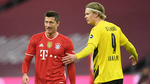 Dwa dni po otrzymaniu nagrody dla najlepszego piłkarza na świecie, Lewandowski wraz z drużyną Bayernu udał się do Leverkusen, gdzie czekał go kolejny ligowy mecz. W spotkaniu z Bayerem, strzelił dwie bramki – pierwszą, dającą remis, w końcówce pierwszej połowy, natomiast drugą w ostatniej doliczonej minucie spotkania. Tym samym, Polak zapewnił swojej drużynie zwycięstwo, jak również awans na pozycję lidera rozgrywek na czas przerwy świąteczno-noworocznej. Rok 2020 zakończył jako najskuteczniejszy strzelec roku kalendarzowego w Europie, z dorobkiem 47 goli uzyskanych w 43 spotkaniach. 24 grudnia 2020 został wybrany piłkarzem roku w plebiscycie dziennika „The Guardian”. 26 grudnia 2020 jako trzeci Polak w historii, po Zdzisławie Krzyszkowiaku i Irenie Szewińskiej, został wybrany najlepszym sportowcem roku w Europie, w 63. Ankiecie Polskiej Agencji Prasowej, jednym z najstarszych plebiscytów sportowych świata, organizowanym od 1958 roku. Lewandowski w głosowaniu 25 europejskich agencji prasowych otrzymał 180 punktów wyprzedzając m.in. Lewisa Hamiltona i Armanda Duplantisa. 27 grudnia 2020 został wybrany piłkarzem roku w plebiscycie Globe Soccer Awards. Polak pokonał nominowanych w tej kategorii Cristiano Ronaldo i Lionela Messiego, a po wyróżnieniu jego wizerunek został wyświetlony na najwyższym budynku świata- Burdż Chalifa. Na uroczystej gali plebiscytu odbywającej się w Dubaju, wraz z Ikerem Casillasem i Cristiano Ronaldo wziął udział międzynarodowej konferencji sportowej pod hasłem „Football at the Top'' (pol. Futbol na szczycie), a także jako przedstawiciel Bayernu Monachium odebrał nagrodę dla najlepszego klubu roku. Podczas uroczystości Polak powiedział: To trofeum bardzo dużo znaczy. Dziękuję trenerowi, kolegom z drużyny, mojej rodzinie, mojej żonie. Ale też mojemu ojcu, którego już z nami nie ma. Nie doczekał moich największych sukcesów, ale patrzy teraz na wszystko z góry. Możliwość rywalizacji z takimi zawodnikami jak Ronaldo to spełnienie marzeń. Jestem z Polski. Nie mogłem oglądać piłkarzy z naszego kraju, którzy byli na tym poziomie. Jeśli spojrzymy na ostatnie 10–20 lat, trudno wymienić Polaka będącego blisko jakiejkolwiek nagrody. Ostatnim był chyba Zbigniew Boniek. Dlatego cieszę się, kiedy widzę na całym świecie kibiców, którzy noszą moje koszulki. Jestem dumny z bycia Polakiem i ze swojego nazwiska. 1 stycznia 2021 wraz z japońską tenisistką Naomi Ōsaką, został wybrany najlepszym sportowcem roku 2020 na świecie w głosowaniu Światowego Stowarzyszenia Prasy Sportowej AIPS. 2 stycznia 2021 wraz z polską tenisistką Igą Świątek triumfował w 38. plebiscycie AIPS Europe jako najlepszy sportowiec w Europie. 3 stycznia 2021 zdobył dwie bramki oraz zanotował asystę w wygranym 5:2 ligowym meczu z 1. FSV Mainz 05. Był to szósty mecz w trwającym sezonie Bundesligi, w którym Lewandowski zdobył co najmniej dwie bramki, a także 56 dublet strzelony w historii jego występów w Bundeslidze. Polak pobił tym samym rekord należący do Gerda Müllera, który popisywał się dubletami 55 razy. 8 stycznia zdobył bramkę z rzutu karnego w spotkaniu z Borussią Mönchengladbach, po raz pierwszy w karierze kompletując 20 goli już po 15 ligowej kolejce. 9 stycznia 2021 wraz z Igą Świątek został laureatem Wielkiej Honorowej Nagrody Sportowej Polskiego Komitetu Olimpijskiego im. Piotra Nurowskiego w kategorii „Zawodnik” za osiągnięcia w 2020 roku. W tym samym dniu zwyciężył w 86. Plebiscycie Przeglądu Sportowego na najlepszego sportowca Polski 2020, triumfując w drugim najstarszym plebiscycie na świecie po raz drugi w karierze. 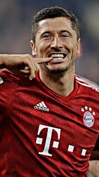 17 stycznia 2021 dzięki bramce zdobytej w ligowym meczu z Freiburgiem (2:1) stał się pierwszym piłkarzem w historii, który zdobył 21 goli po rundzie jesiennej sezonu Bundesligi. Lewandowski pobił rekord należący do Gerda Müllera, który na tym samym etapie sezonu 1968/1969 zgromadził 20 bramek. 20 stycznia 2021 znalazł się w wybranej głosami kibiców drużynie roku UEFA. 24 stycznia 2021 strzelając bramkę w meczu z Schalke 04 stał się pierwszym piłkarzem w historii, który zdobywał bramki w 8 wyjazdowych spotkaniach z rzędu, a także poprawił rekord najdłuższej serii meczów z golem przeciwko jednemu klubowi do 11 spotkań. W lutym 2021 Międzynarodowa Federacja Historyków i Statystyków Futbolu (IFFHS) z dorobkiem 47 goli uznała go za najskuteczniejszego napastnika na świecie, a także uhonorowała tytułem piłkarza roku 2020 i umieściła w najlepszej drużynie dekady. 1 lutego 2021 znalazł się w składzie Bayernu Monachium na Klubowe Mistrzostwa Świata 2020. Bayern jako zwycięzca Ligi Mistrzów UEFA zmagania na rozgrywanym w Katarze turnieju rozpoczął od półfinału gdzie zmierzył się ze zdobywcą afrykańskiej Ligi Mistrzów, egipskim Al-Ahly. W spotkaniu rozegranym 8 lutego 2021 na Ahmed bin Ali Stadium Lewandowski strzelił dwa gole, a także został wybrany zawodnikiem meczu i dzięki zwycięstwu 2:0 awansował z drużyną do finału. Lewandowski rozgrywając mecz z Al-Ahly stał się pierwszym Polakiem, który zagrał na Klubowych mistrzostwach świata (Józef Młynarczyk wystąpił w Pucharze Interkontynentalnym, turnieju poprzedzającym Klubowe mistrzostwa świata), a zarazem pierwszym polskim strzelcem i najskuteczniejszym zawodnikiem Bayernu Monachium w historii turnieju. W finale rozegranym 11 lutego 2021 na Education City Stadium w Ar-Rajjan Bayern mierzył się ze zwycięzcą Ligi Mistrzów CONCACAF, meksykańskim zespołem Tigres UANL. Robert Lewandowski rozegrał w tym spotkaniu 73 minuty i miał udział przy zwycięskiej bramce Benjamina Pavarda z 59 minuty spotkania, które zakończyło się zwycięstwem niemieckiej drużyny 1:0. Po zakończeniu meczu, Polak otrzymał Złotą Piłkę dla najlepszego zawodnika turnieju, a także został wybrany najlepszym zawodnikiem meczu finałowego. Lewandowski stał się wówczas drugim, po Tomaszu Kuszczaku, polskim piłkarzem, który sięgnął po Klubowe mistrzostwo świata (trzecim biorąc pod uwagę Puchar Interkontynentalny), natomiast Bayern jako druga drużyna w historii, po FC Barcelonie z 2009, zdobył szóste trofeum podczas jednej kampanii. 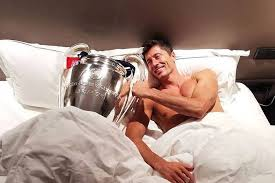 13 lutego 2021 po raz dziewiąty w karierze został wybrany piłkarzem roku w plebiscycie tygodnika ''Piłka Nożna''. 15 lutego 2021 w meczu z Arminią Bielefeld (3:3) zdobył swoją 30 bramkę we wszystkich rozgrywkach w trwającym sezonie, osiagając ten wynik najszybciej spośród piłkarzy występujących w pięciu najlepszych europejskich ligach. Z 28 goli zdobytych w tym sezonie Lewandowski 23 z nich zdobył poprzez strzały w dolne rogi bramki, 25 po maksymalnie dwóch kontaktach z piłką, a 10 po uderzeniach z dystansu większego niż 11 metrów. 6 marca 2021 zdobył hattricka w meczu z Borussią Dortmund, stając się pierwszym piłkarzem w historii Bundesligi, który zdobywał co najmniej dwie bramki w szóstym meczu z rzędu przeciwko tej drużynie rozgrywanym na Allianz Arena.